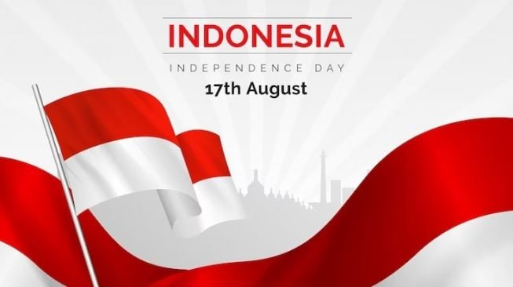

Setiap tahun, tanggal 17 Agustus menjadi momen yang sangat istimewa bagi seluruh rakyat Indonesia. Dimana pada hari itu, bangsa ini merayakan Hari Kemerdekaan yang menandai proklamasi kemerdekaan Indonesia pada tahun 1945. Perayaan ini bukan hanya sekadar peringatan, tetapi juga merupakan ungkapan rasa syukur dan cinta tanah air. Berbagai cara yang dilakukan untuk meriahkan hari ini yang pastinya memberi keseruan pada orang-orang yang merayakannya. Lalu bagaimana keseruan perayaan kemerdekaan di kampung rambutan? Simak terus artikel ini yah.
Proklamasi kemerdekaan Indonesia dibacakan oleh Soekarno dan Mohammad Hatta pada 17 Agustus 1945. Momen ini menjadi tonggak sejarah yang mengakhiri penjajahan dan membuka lembaran baru bagi bangsa Indonesia. Sejak saat itu, 17 Agustus diperingati sebagai hari bersejarah yang menandakan kebangkitan dan perjuangan rakyat Indonesia untuk meraih kemerdekaan.
Perayaan Hari Kemerdekaan di Indonesia sangat beragam, tergantung pada daerah masing-masing. Namun, kampung Rambutan memiliki tradisi tersendiri dalam merayakannya:
| Kategori | Perlombaan |
|---|---|
| Anak-anak | Balap Kerupuk |
| Balap Karung | |
| Tarik Tambang | |
| Balap Kelereng | |
| Lomba Menggambar | |
| Ibu-ibu | Balap Kerupuk |
| Balap Karung | |
| Tarik Tambang | |
| Balap Kelereng | |
| Lomba Estapet Terigu | |
| Lomba Makeup | |
| Bapak-bapak | Maraton |
| Panjat Pinang | |
| Futsal | |
| Warga | Lomba Busana Pawai |
| Lomba Menghias Sepeda |
Perayaan 17 Agustus bukan hanya sekadar ritual tahunan, tetapi juga menjadi pengingat bagi setiap generasi akan pentingnya perjuangan dan pengorbanan para pahlawan. Ini adalah waktu untuk merenungkan arti kemerdekaan dan berkomitmen untuk terus membangun bangsa dengan semangat persatuan dan kesatuan.
Dalam suasana yang penuh suka cita, perayaan ini juga mengingatkan kita untuk menghargai keberagaman dan memperkuat rasa cinta tanah air. Melalui semangat gotong royong, diharapkan kita dapat terus bekerja sama untuk mewujudkan cita-cita bangsa.
Lansung saja simak video ini untuk melihat keseruan hari itu :
Bagaimana seru bukan perayaan ini? maukah kamu mengungkapkan ceritamu disini
Baca artikel lainnya di sini →